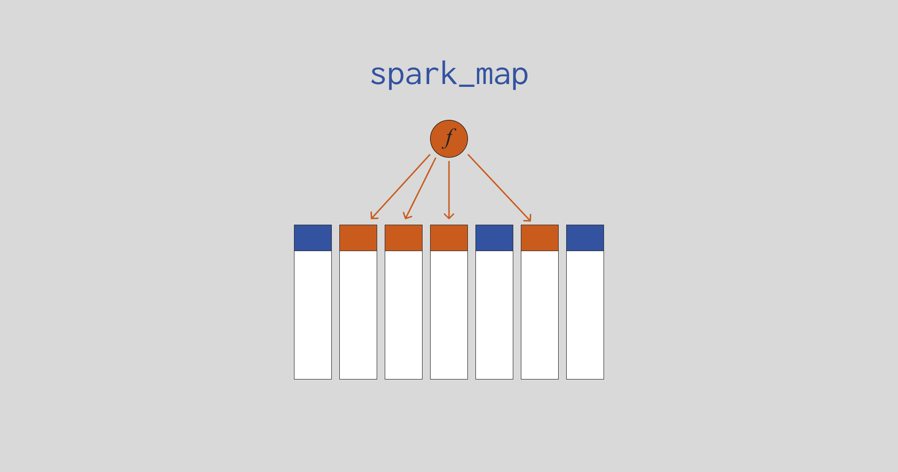

from pyspark.sql import SparkSession
spark = SparkSession.builder.getOrCreate()
d = [
(12114, 'Anne', 21, 1.56, 8, 9, 10, 9, 'Economics', 'SC'),
(13007, 'Adrian', 23, 1.82, 6, 6, 8, 7, 'Economics', 'SC'),
(10045, 'George', 29, 1.77, 10, 9, 10, 7, 'Law', 'SC'),
(12459, 'Adeline', 26, 1.61, 8, 6, 7, 7, 'Law', 'SC'),
(10190, 'Mayla', 22, 1.67, 7, 7, 7, 9, 'Design', 'AR'),
(11552, 'Daniel', 24, 1.75, 9, 9, 10, 9, 'Design', 'AR')
]
columns = [
'StudentID', 'Name', 'Age', 'Height', 'Score1',
'Score2', 'Score3', 'Score4', 'Course', 'Department'
]
students = spark.createDataFrame(d, columns)
students.show(truncate = False)Introducing spark_map

Overview
spark_map is a python package that offers some tools to easily apply a function over multiple columns of Apache Spark DataFrames, using pyspark. You could say that spark_map offers an implementation for the map() python function for Spark DataFrames. There are two main functions in the package that performs the heavy work, which are spark_map() and spark_across().
Both of these functions perform the same work, which is to apply a function over multiple columns of a Spark DataFrame. But they differ in the method they use to apply this function. spark_map() uses the agg() method of Spark DataFrame’s to apply the function, and spark_across() uses the withColumn() method to do so.
This means that you will mainly use spark_map() when you want to calculate aggregates of each column. Is worthy pointing out that spark_map() works perfectly with grouped DataFrames as well (i.e. GroupedData). In the other hand, you will use spark_across() when you want to just transform the values of multiple colums at once by applying the same function over them.
Installation
To get the latest version of spark_map at PyPI, use:
pip install spark-mapDocumentation
The full documentation for spark_map package is available at this website. To access it, just use the Function Reference and Articles menus located at the top navigation bar of this page.
A simple example of use
As an example, consider the students DataFrame below:
Suppose you want to calculate the average of the third, fourth and fifth columns of this DataFrame students. The spark_map() function allows you to perform this calculation in an extremely simple and clear way, as shown below:
from pyspark.sql.functions import mean
from spark_map import spark_map, at_position
spark_map(students, at_position(3, 4, 5), mean).show(truncate = False)If you want your calculation to be applied by group, just provide the grouped table to spark_map(). For example, suppose you wanted to calculate the same averages as in the example above, but within each department:
by_department = students.groupBy('Department')
spark_map(by_department, at_position(3, 4, 5), mean).show()